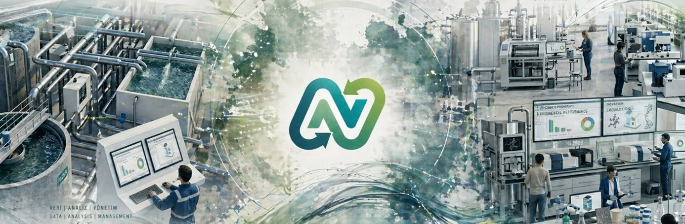

Her bir hizmet alanı teknik doğruluk, mevzuat uyumu, çevresel performans ve stratejik gelişim ekseninde kurgulanmıştır.

"Güvenilir Veri, Güçlü Kurumsal İtibar"
Değişen küresel standartlarda sadece ayakta kalmanızı değil, öncü olmanızı sağlıyoruz. Çevresel etkinizi minimize ederken raporlama kapasitenizi en üst seviyeye çıkarıyoruz.
Kurumsal performansınızı uluslararası standartlarda (GRI, SKDM) görünür kılıyoruz. Veri yapısı oluşturma, raporlama içeriği ve ekip eğitimi dahil.
Ürün ve süreçlerinizin "beşikten mezara" çevresel etkisini ISO 14040/44 uyumlu, SimaPro ile bilimsel verilerle ortaya koyuyoruz.
Emisyonlarınızı ve su kullanımınızı analiz ederek azaltım stratejileri ve net-sıfır hedefleri oluşturuyoruz.
AB Yeşil Mutabakatı, SKDM ve ulusal/uluslararası düzenlemelere tam uyum sağlayarak operasyonel risklerinizi yönetiyoruz.
Kurumsal ESG performans göstergelerinin belirlenmesi, mevcut durum analizi ve gelişim önceliklerinin tanımlanması.
Raporlama ekiplerine yönelik kapasite geliştirme eğitimleri ve kurumsal sürdürülebilirlik kültürü oluşturma.
"Mühendislik Hassasiyeti, Operasyonel Verimlilik"
Atık ve kaynak yönetimini bir maliyet kalemi olmaktan çıkarıp döngüsel ekonominin bir parçası haline getiriyoruz. Teknik darboğazlara akademik tabanlı mühendislik çözümleri sunuyoruz.
Patentli (TR 2013 11364 B) yenilenebilir enerji destekli hibrit kurutma sistemleri ile arıtma çamurlarında yüksek verimli çözümler.
Proses değerlendirme, geri kazanım sistemleri tasarımı ve deşarj kalitesi optimizasyonu; yağmursuyu yönetimi dahil.
Hammadde, enerji ve su kullanımında kayıpları kaynağında belirleyerek maliyet düşürücü iyileştirmeler geliştiriyoruz.
Endüstriyel emisyonların izlenmesi ve kontrol teknolojilerinin seçimi konusunda teknik danışmanlık.
Kütle ve enerji dengesi hesaplamaları, operasyonel verimlilik analizi ve süreç iyileştirme önerileri.
Endüstriyel tehlikeli atıkların sınıflandırılması, bertaraf yöntemleri ve yasal mevzuat gereklilikleri danışmanlığı.
"Geleceğin Teknolojilerini Bugünden Şekillendirin"
Yeni fikirleri sahaya inen çözümlere dönüştürüyoruz. Üniversite-sanayi iş birliği ruhunu profesyonel proje yönetimi disipliniyle birleştiriyoruz.
Fikir aşamasından prototipe, pilot tesisten ticarileşmeye kadar Ar-Ge süreçlerinin tam yönetimi.
TÜBİTAK, KOSGEB, AB Horizon, ERASMUS, LIFE ve Kalkınma Ajansı projeleri için teknik kurgu ve başvuru dosyası hazırlama.
Mühendislik projeleri için uluslararası standartlarda şartnameler hazırlama ve teklif değerlendirme süreç yönetimi.
Teknik ekiplere güncel çevre teknolojileri ve sürdürülebilirlik vizyonu kazandıracak uzmanlık eğitimleri.
Yenilikçi çevre çözümleri için patent hazırlama, fikri mülkiyet yönetimi ve ticarileştirme stratejisi.
Üniversite kaynaklı projelerin reel sektörde karşılık bulmasını sağlayan köprü danışmanlığı.